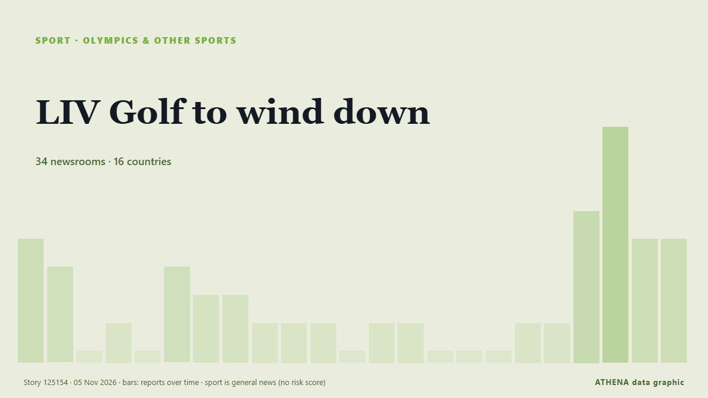

Sport
SponsoriséPrésenté par  Cybernetics and Artificial Intelligence Lab Welcome to the Cybernetics and Artificial Intelligence Laboratory, established at the Department of Business Administration of the National and Kapodistrian University of Athens. The lab is headed by Professor Dimitrios Thomakos. The lab aims to do research that can be published in top venues. Our research uses tools and methods of Artificial Intelligence, and lies in the following areas: - Forecasting - Decision making - Cyber security - Finance We are always looking forward to collaborating with exceptional students!
Cybernetics and Artificial Intelligence Lab Welcome to the Cybernetics and Artificial Intelligence Laboratory, established at the Department of Business Administration of the National and Kapodistrian University of Athens. The lab is headed by Professor Dimitrios Thomakos. The lab aims to do research that can be published in top venues. Our research uses tools and methods of Artificial Intelligence, and lies in the following areas: - Forecasting - Decision making - Cyber security - Finance We are always looking forward to collaborating with exceptional students!
Les titres sont affichés en anglais, tels que publiés.

JO et autres sportsLIV Golf to wind down
LIV Golf has confirmed it plans to wind down operations and enter the liquidation phase, instead of launching a new version, because of a lack of financial support. de Sky Sports
| 23 oct. | 16 |
|---|---|
| 24 oct. | 9 |
| 25 oct. | 32 |
| 26 oct. | 45 |
| 27 oct. | 64 |
| 28 oct. | 62 |
| 29 oct. | 72 |
| 30 oct. | 101 |
| 31 oct. | 74 |
| 1 nov. | 80 |
| 2 nov. | 113 |
| 3 nov. | 111 |
| 4 nov. | 82 |
| 5 nov. | 46 |
Nadal set to join Real Madrid board of directors
Tennis great Rafael Nadal is set to join the board of Spanish football giants Real Madrid. de BBC News
Harry Kane extends contract with Bayern Munich
The England captain is nearing the end of the four-year contract he agreed after leaving Tottenham in summer 2023. de The Irish News (Belfast)
Jesus de Miguel's cause of death after Tenerife star's horror collision with goalkeeper Jesús Owono
Tributes have flooded in from across the world of football after the tragic incident. de Liverpool Echo
Japan FA chief Tashima to challenge Infantino for FIFA presidency
Kohzo Tashima announced his intention to run in the election next March, and that board members of Japan’s football federation, JFA, unanimously agreed to back him. de Sportstar
Tennis player Burrage receives death threats, abuse on social media after Chennai Open exit
Burrage shared a recording of a lengthy reel of abusive messages she received on Instagram following a loss to Vaishnavi Adkar in the round of 32 at the Chennai Open. de Sportstar
Mass brawl sparks record 53 red cards in Brazilian under-20s match
The referee sent off 43 players, eight coaching staff and two board members after goal celebrations and taunting descended into complete chaos. de Free Malaysia Today
Como equal Champions League record with stunning 9-1 win at Lens
Como stormed into the Champions League record books with a stunning 9-1 demolition of Lens on Wednesday, equalling the biggest victory in the competition’s history. de Cyprus Mail
Djokovic battles through Paris Masters opener
The victory over Valentin Vacherot kept alive the Serbian 24-time Grand Slam champion's chances of landing a spot in the season-ending ATP Finals. de Free Malaysia Today
West Ham name Scott Parker head coach
LONDON: West Ham announced on Tuesday that they had sacked head coach Nuno Esprito Santo after a disappointing start to the Championship season. de New Straits Times
Ballon d'Or winner Kane signs Bayern extension until 2029
Bayern Munich striker Harry Kane has beaten Barcelona youngster Lamine Yamal and Real Madrid forward Kylian Mbappé to emerge as the best player of the 2025-2026 season in Spanish newspaper Marca's… de Vanguard
Arsenal injury update: Ezri Konsa, William Saliba, Bukayo Saka latest return dates
William Saliba’s return to fitness may have come at the perfect time for Arsenal. de Evening Standard (London)
Rybakina, Gauff drawn together at WTA Finals, Sabalenka faces Andreeva
World number one Elena Rybakina and American Coco Gauff were drawn in Group One for the WTA Finals, while second-ranked Aryna Sabalenka will face third-ranked Mirra Andreeva in Group Two at the… de Business Recorder
Arsenal edge stubborn Slavia in Champions League
The Premier League champions were quick to take control of the game, with Noni Madueke and Viktor Gyokeres scoring in the first half to secure a 2-1 win. de Free Malaysia Today
Valverde late strike seals Real Madrid 3-2 win at AEK
Real Madrid came from behind to beat AEK Athens 3-2 in the Champions League on Wednesday, with Federico Valverde scoring in stoppage time to complete a late victory. de Cyprus Mail
Fenerbahce 3 Liverpool 2 LIVE - Andoni Iraola and Kostas Tsimikas react as Reds suffer first Champions League loss
Live coverage of Liverpool's Champions League clash against Fenerbahce at the Chobani Stadium as they look to make it four league phase wins from four. de Liverpool Echo
Real Madrid confident of signing Man Utd's Gabriel
Real Madrid have reached a verbal agreement with 16-year-old JJ Gabriel over a potential move to the Santiago Bernabeu. de Sky Sports
Djokovic keeps alive bid to squeeze into ATP Finals
Novak Djokovic kept alive his last-ditch bid to qualify for this year's ATP Finals by grinding out a first-round victory over Valentin Vacerot at the Paris Masters. de MyJoyOnline
New Mexico's Deb Haaland on making history as first Native American woman elected governor
The election led to several historic firsts. de PBS NewsHour
Erling Haaland is Manchester City’s hero again in entertaining win in Leipzig
Haaland scored his 14th goal of the season to down RB Leipzig. de The Irish News (Belfast)
Irish Olympian Ciara Mageean was a 'talented and inspirational human being'
‘Devastated’ Lady Mary Peters leads condolences. de Belfast Telegraph
McIlroy backs claims LIV wanted to 'destroy' DP World Tour
Rory McIlroy backs DP World Tour CEO Guy Kinnings' comments saying that LIV Golf started with the intention of 'destroying' the former, as he welcomes a reset in men's golf. de Sky Sports
Bayern skeleton crew sink Atletico in Champions League
MADRID: Bayern Munich overcame a horror list of absences to cruise to a 2-0 win away at Atletico Madrid in the Champions League on Tuesday. de Arab News
Cold Play: Nations Line Up To Boycott Ice Hockey Games Against Russia
A growing list of countries are lining up against a court decision allowing Russia to rejoin international ice hockey events, saying they will boycott any team Moscow sends, putting the World… de RFE/RL (English)
India vs Pakistan in Men’s ODI World Cup 2027 attract nearly 84 lakh ticket applications
India and Pakistan will face off on October 10 at Johannesburg’s Wanderers stadium in South Africa — a venue that has a capacity of just 34,000 spectators. de Sportstar
PSG breaks Champions League record with four goals against Villarreal
French giants Paris Saint-Germain (PSG) have set a new UEFA Champions League record after scoring four goals in just 17 minutes during their away match against Spanish side Villarreal in the… de AzerNews
Aston Villa make legal action decision after Jamie Carragher apology
Pundit had told Villa supporters to "shut the f*** up" de Evening Standard (London)
Qatar sends 15 buses to Senegal ahead of Dakar 2026 Youth Olympics
With just days to go before the start of the Dakar 2026 Youth Olympic Games, 15 buses gifted by Qatar arrived in the Senegalese capital. de Africanews (English)
Palace lose appeal against Mateta red card
Palace striker was sent off during the defeat to Spurs. de Evening Standard (London)
FIFA visits Portugal as preparations for 2030 World Cup continue
A FIFA delegation is in Portugal this week to review preparations for the 2030 World Cup, which the country will co-host with Spain and Morocco. de The Portugal News
Jake Paul Faces MMA Star Cedric Doumbe On Christmas Eve In Dubai
Jake Paul will fight French mixed martial artist Cedric Doumbe in Dubai on Christmas Eve as the American makes his comeback after a year out. de The National
FIFA’s Infantino ineligible for re-election, says former governance chief
Miguel Maduro insists Gianni Infantino cannot serve more than three terms, pointing to FIFA's statutes. de Al Jazeera English
Kansas Elects Its First Democratic Senator in 94 Years
Adam Hamilton has ousted Republican Roger Marshall in the conservative state, part of a huge night for Democrats nationwide. de Rolling Stone
Asian Cup in Saudi Arabia to be postponed
Saudi Arabia, which will host the FIFA World Cup in 2034, will have an opportunity to use the 2027 Asian Cup as a dress rehearsal for the World Cup. de Sportstar
Barcelona 3-0 Aston Villa highlights and ratings after Champions League defeat
BirminghamLive brings you coverage of Aston Villa's Champions League clash against Barcelona. de Birmingham Mail